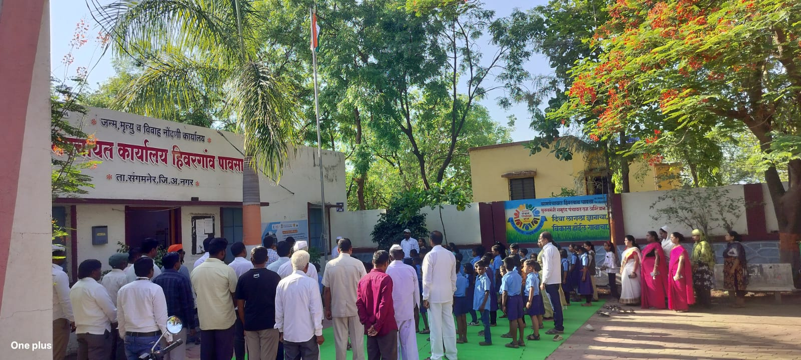
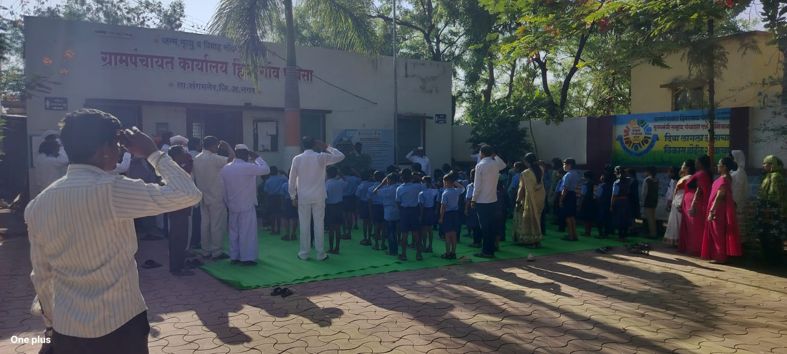

आपले गाव • आपली ग्रामपंचायत
SMART VILLAGE EXPERIENCE
सेवा, शासकीय योजना, ग्रामसभा सूचना, विकासकामांची प्रगती आणि नागरिक संपर्क एका डिजिटल प्लॅटफॉर्मवर.
CITIZEN LEADERSHIP
Gram Panchayat Hiwargaon Pawasa
Gram Panchayat Hiwargaon Pawasa
Gram Panchayat Hiwargaon Pawasa
CITIZEN FIRST
LIVE TRANSPARENCY
UPDATES
आज:
PUBLIC FUNDING
| निधी स्रोत | वर्ष | मंजूर | प्राप्त | वापर |
|---|
DAILY NEWS
PHOTO GALLERY


CONTACT
📍 ग्रामपंचायत हिवरगाव पावसा, ता. संगमनेर
📞 +91 95036 24087
✉ shubhampawase012@gmail.com
WhatsApp संपर्क